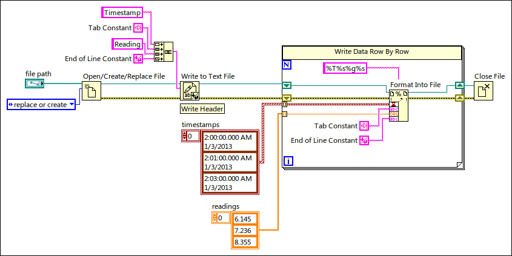
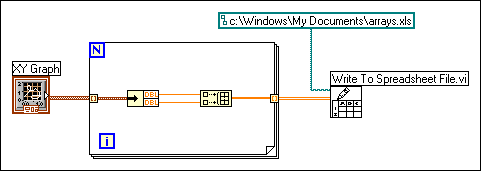

Text-based spreadsheet files are a subset of text files. To write data to a spreadsheet file, you must format string data as a spreadsheet string, which is a string that includes delimiters, such as tabs.
The following VI writes different data types to a text file. The Write to Text File function writes a header containing string data and delimiters. The Format Into File function formats timestamp data, numeric data, and delimiters into a spreadsheet string and writes the string to the file.

Use the Write Delimited Spreadsheet VI or the Array To Spreadsheet String function to convert a set of numbers from a graph, a chart, or an acquisition into a spreadsheet string.
|
Note��For Microsoft Excel files (.xlsx), use the Write to Measurement File Express VI to save the dynamic data you acquire to an Excel file. |
The following VI acquires data from a graph and writes it to a spreadsheet file.

Reading text from a word processing application might result in errors because word processing applications format text with different fonts, colors, styles, and sizes that the File I/O VIs cannot process.
If you want to write numbers and text to a spreadsheet or word processing application, use the String functions and the Array functions to format the data and to combine the strings. Then write the data to a file.